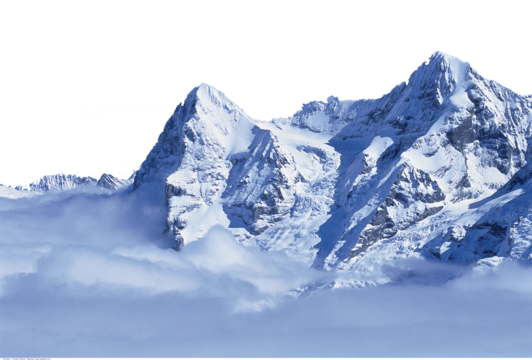
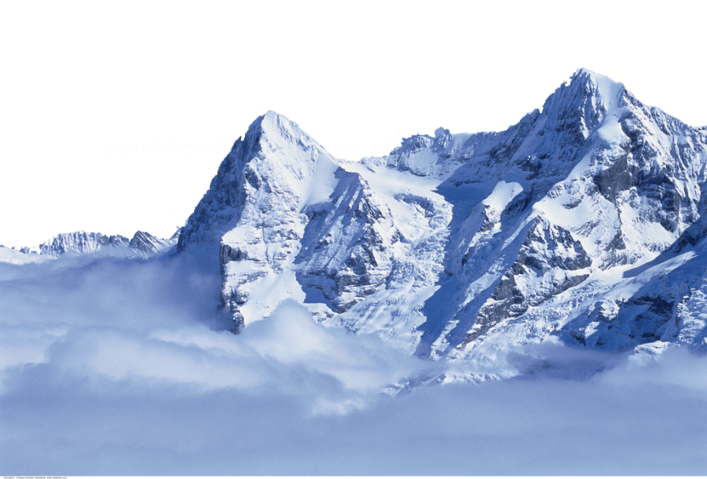
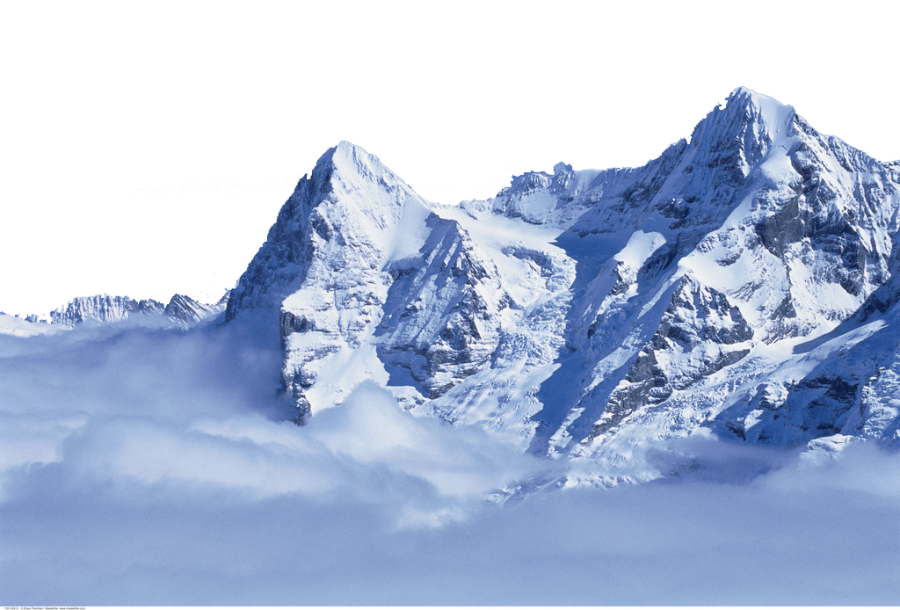
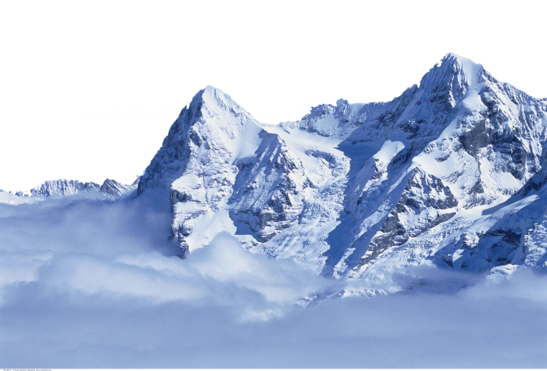

Switzerland is a small mountainous country located in central Europe. This landlocked country is about the size of New Jersey and is between France and Italy. It is also bordered by Austria, Germany, and Liechtenstein.
Most of the population lives in the plateau which is between the high Alps in the south and the Jura mountains in the north. The mountainous area in the south is sparsely populated.
Switzerland is one of the world’s wealthiest countries. The Swiss are well known for their watches and clocks.
There is not a single official language in Switzerland. People speak one of several languages, including Swiss German, French, and Italian.
The Swiss Alps are high, snow-covered mountains most of which are over 13,000 feet (4,000 meters). The most famous peak is the Matterhorn which is 14,692 feet (4,478 meters) tall, but the highest peak is Dufourspitze at 15,203 feet (4,634 meters).
Scientists are concerned that glaciers in the Swiss Alps have lost a lot of ice coverage in the past 40 years. This may be related to global climate change. Rapid melting of the glaciers could cause flooding to the villages below.
Most animals in Switzerland live in the mountains. The ibex, a species of mountain goat, was hunted to near extinction in the early 1800s. The species has since been reintroduced and more than 15,000 ibex now live in the Swiss Alps. Hikers may also encounter chamois, another goatlike animal, and marmots. The forests of Switzerland are also home to deer, rabbits, foxes, badgers, squirrels, and many bird species.
The country is made up of 26 cantons or states, which form the confederation. The leader of the government is the president. Both the president and vice president are elected by the Federal Assembly from the Federal Council. They serve a one-year term. Elections are usually held in December.
Representatives of the cantons are elected to the assembly for four-year terms.
Switzerland was formed in 1291 as a union of three states and became an independent country in 1815. The constitution, adopted in 1848, does not allow for troops to be sent to serve in foreign wars. The country has remained neutral in conflicts around the world, including both world wars.
Switzerland did not become a member of the United Nations until 2002, and is not a member of the European Union.